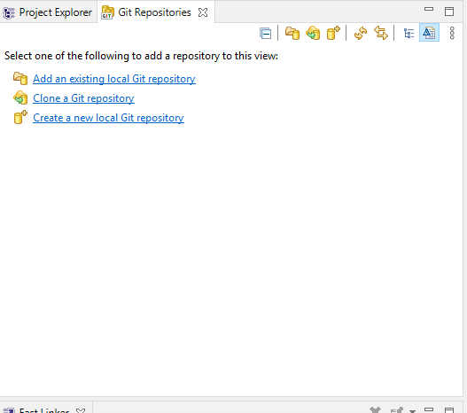
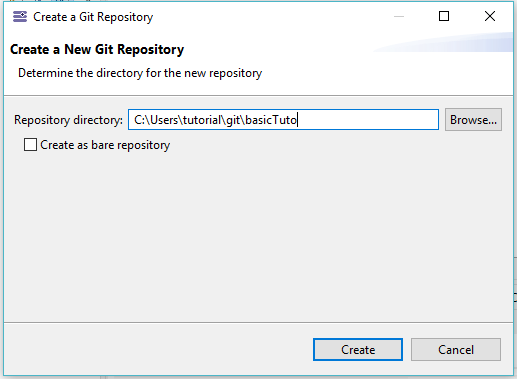
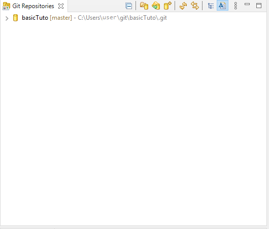
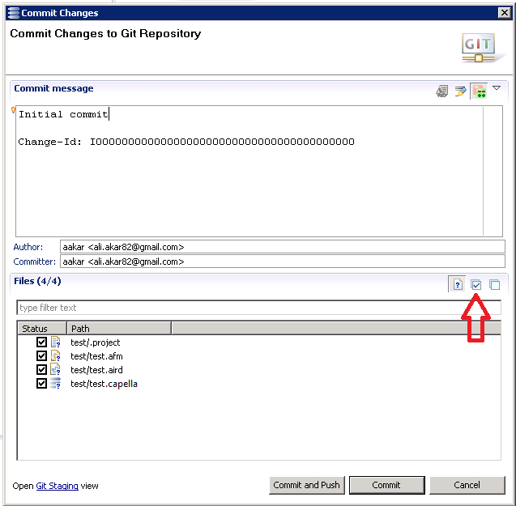
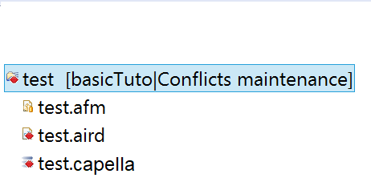

Version Control with GIT
Git is a Version Control System (VCS) for tracking changes in computer files and coordinating work on those files among multiple users.
As with most other distributed version control systems, and unlike SVN and CC, every Git directory on every computer is a full-fledged repository with complete history and full version tracking abilities, independent of network access or a central server.
Tutorials
These tutorials assume that you are familiar with Git and you know how it works.
If you are new to Git or to distributed version control systems generally, then you might want to read Git for Eclipse Users first.
More background and details can be found in the on-line book Pro Git.
Capella Git Adapter is based on EMF Diff/Merge, help and details about it can be found in theEMF Diff/Merge Guide.

| Please consider the given process instructions:
- Always validate your model before a commit.
- Select all fragments on commit if the model is fragmented.
- Close the session before a pull, rebase or merge operation.
- To handle large files in Git Repositories, more than 2GB, there are multiple 3rd party implementations that will try to solve the problem, many of them using a similar paradigm as a solution.
- The content of all model files (aird, airdfragment, capella, capellafragment, afm, ...) are declared as ASCII Text and not binary files.
(see Capella : Window > Preferences > Team > File Content)
|
Basic Tutorial
This tutorial provides a step by step walk-through of the Capella Git Adapter.
Git perspective
- To open the Git perspective: go to menu Window > Perspective > Open perspective > Other... > Git.
Creating Repositories
| Some considerations for Git Repositories to be used in Capella:
- Don't create the Repository within the Capella workspace.
- Don't create a Repository with a Capella project as root.
|
- In the Git Repositories view, create a new Git Repository: click "Create a new local Git repository".
-
- In the opened wizard, select a path on your file-system to a non-existing folder, click Finish.
-
- The created Git Repository will be shown in the Git Repositories view.
-
Put the Capella project under source control on the Git Repository
- Now, switch back to the Capella perspective ("Capella" button in the top right-hand corner) and create a new Capella Project.
- Right-click the project in the Project Explorer > Team > Share Project...
-
- Select Git and click Next.
-
- Select your repository and click Finish.
-
Commit the project
- Right-click the project in the Project Explorer > Team > Commit...
-
- Type "Initial commit" in the message field, select all files, click "Commit".A "master" branch is being created.
-
- Create for example a System Data Flow Blank diagram, create a few functions and exchanges, save.
- Commit the changes like above, for example with the "First changes" message.
Check the History
- Right-click the .capella file > Team > Show in History. You can now see your two commit in the History view.
-
- In the History view, select the two commits and select "Compare with each other" then "Finish".You should see the differences between your commits with the Capella Diff/Merge tool. But you cannot modify them (merge), because you cannot modify the history.
-
- -

Check the current changes with the last commit
- Make new changes in your diagram including the renaming of a function, save.
- Right-click the .capella file > Compare with > Head revision > Finish. You have the possibility to undo some of the current changes at a fine grain with the diff/merge tool.
-
- -

Advanced Tutorial
This is a continuation of the above basic tutorial.
Create a tag
Like most VCSs, Git has the ability to tag specific points in history as being important. Typically people use this functionality to mark release points (v1.0, and so on). In this section, you’ll learn how to create new tags.
- Open the History View and right-click on the commit you want to tag
- Click Create Tag... in the menu
-
- -

- Enter the tag name "V1.0"
- Enter the tag message "Version 1.0"
- Click Create Tag to create the annotated tag
Tags can also be created from the team menu, click Team > Advanced > Tag..., enter the tag name and message, select the commit you want to tag (default is HEAD) and click OK.
Resolve Conflicts
Conflicts arise when contradicting changes have been made in parallel and an attempt is made to integrate (merge) them. With Git, this may happen for example when two branches are merged, when a branch is rebased on another, or when a pull is done.
- Commit the changes done before with the message "Added Transmit", including the renaming of the function. Be sure to select both .aird and .capella files.
- Right-click the project > Team > Switch to > New branch..., type "maintenance" and validate.
You are now in branch "maintenance".
- -

- Close the session (right-click the .aird file and select "Close"). This is because we are going to modify the content of the filesystem.
- In the History view, right-click the "First changes" commit, right-click "Reset" > "Hard". Branch "maintenance" has been moved back to this past commit.
This will reset the current branch head to "First changes" commit. It resets the index and working tree. Any changes to tracked files in the working tree since "First changes" commit are discarded.
- -

- -

- Open the model again, rename the function again with a different name, add another function and commit.
- In Window > Preferences > Team > Git > History, select "All branches and tags" and click OK.
- In the History view, you can now see the two branches "master" and "maintenance" that have parallel commits.
We are going to merge branch "master" into branch "maintenance".
- -

- Right-click the project and click Team > Merge..., select "master" then "Merge".
-
- -

- A conflict dialog shows up, click OK.
-
- A red icon identifies the conflicting files, here the .aird and .capella files.They are identified as conflicting because they have been modified in both branches.
-
- Right-click the .aird file and select Team > Merge Tool.
-
- -

- Click OK: the Capella diff/merge tool shows up. You may only modify the model on the left-hand side, which is initialized with the content it has in branch "maintenance". On the right-hand side, you can see its content in the "master" branch. You may only report changes from the "master" branch to the "maitenance" branch. In the end, the content on the left-hand side will be considered as the merged content.
- Click the "Difference Categories" button in the "Synthesis" section: a dialog opens that allows filtering differences.
-
- Let us report all elements that were added in the "master" branch. Set the "Added elements" with the right-to-left blue arrow icon to "Focused" mode and click OK: only those differences are now shown.
-
- Select all root elements in the "Synthesis" section and click the "Copy to the left" merge button, the one with the left-to-right arrow icon. Done!
-
- Let us now focus on real conflicts, i.e., conflicts at the granularity of model elements. Re-open the "Difference Categories" dialog, reset the "Added elements" category to "normal" mode and set the "Conflicts" category to "focused" mode, then press OK.
-
- There is one real conflict: the parallel renaming of the function. You can now see it in both the model and the diagram. Let us first ignore the diagram since in this case it will be able to synchronize with the model.
- Select the diagram in the "Synthesis" view and click the "Ignore on the left" button, the one with the check box icon.
-
- Click the "Next model difference" navigation button, the one with the downward arrow.
-
- The only difference left is selected, which corresponds to the renaming in the model. You have the choice to either keep the name from the "maintenance" branch on the left, or report the name of the "master" branch on the right. Click the "Copy to the left" merge button to opt for the second solution.
-
- -

- You may now consider the model as merged. Press Ctrl-S to save then close the diff/merge editor. You now have to inform Git that the merge is finished.
- Switch back to the Git perspective, select the repository and select the "Git Staging" view at the bottom. You should see the .aird and .capella files in the "Unstaged Changes" section.
-
- Drag and drop these files to the "Staged Changes" section to mark them as merged, then click the Commit button. The merge is officially finished.
-
- Switch back to the Capella perspective and select the "History" view: you can see through the lifelines that you have successfully merged the branches.
-
- Open the System Data Flow diagram: you can see that the contributions of the two branches have been integrated and the rename conflict has been resolved in favor of the "master" branch. You can also see that the editor is in dirty mode (save is enabled): this is because the diagram has automatically updated itself to reflect the change to the name.
Fragmented Model
If you are not familiar with Capella model fragmentation, you can refer to Fragment Management
When your model is fragmented, you have to select all your fragments in your commits and always use the root aird for compare operation.
Model with libraries
If your model refers to libraries, you have to include manually your modified libraries in your commits in order to keep your model valid.
Limitations / Known Issues
- Diff/Merge 3-way can be improved.
- The session needs to be closed prior to any Fetch, Pull or Rebase. This is due to the fact that files will be changed by Git and those changes need to be synchonized with the Eclipse File System.
- On a fragmented model, Diff/Merge needs to be performed on the root file (not the airdfragment/capellafragment) to ensure that the model is fully loaded during the Diff/Merge analysis.